포트 낙스(Fort Knox) 이야기
게시: 2020-06-11T06:30:06+09:00
원래 지폐, 즉 은행권(bank note)라는 것은 돈이 아니라, 진짜 돈을 은행에 맡겨두고 받은 영수증입니다. 진짜 돈은 바로 금이지요. 그런데 진짜 돈인 금은 무겁고 유통시키면 조금씩 마모되니까, 대신 이 '영수증'을 들고 은행에 가면 진짜 돈으로 바꿔준다며 유통시킨 것이 바로 지폐입니다. 그래서 사실 영국이나 프랑스나 18세기까지만 해도 한 국가 안에서 지폐 발행권이 꼭 정부에만 있었던 것도 아니고, 여러가지 종류의 지폐가 유통되고 있었습니다. 가령 나폴레옹은 1803년 파리 시내에서는 지폐는 프랑스 중앙은행(Banc de France)에서만 발행할 수 있도록 선포합니다. 그 전에는 파리 시내에서조차도 여러가지 지폐(은행권)이 남발되었다는 이야기지요.
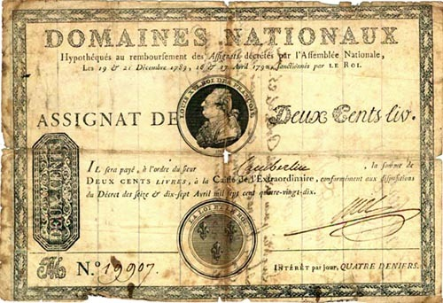
(지폐 남발 막장의 끝을 보여준 아시냐(assignat) 지폐) 참 개판같지요 ? 그러나 사실 우리가 사는 이 시점도 마찬가지입니다. 가령 주택담보대출 이자의 기본이 되는 CD금리에서 CD(Certificate of Deposite), 즉 예금증서라는 것이 바로 일종의 각 은행들이 발급하는 일종의 '진짜 돈을 맡겨둔 영수증'입니다. 이걸 은행권이나 지폐라고 부를 수는 없지만, 18세기에 유통되던 각종 은행권과 크게 다를 바는 없는 개념입니다.
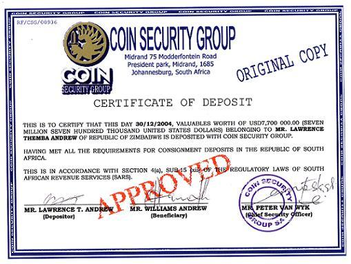 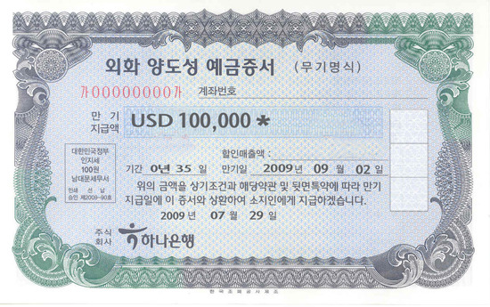
(한때 상속증여세 회피 수단으로 무기명 양도성 예금증서가 인기 만발이었지요) 일반적으로 유럽의 황금기는 19세기 초부터 제1차세계대전 직전까지라고 합니다. 그리고 이 시기는 유럽이 금본위제를 채택했던 기간과 정확히 일치합니다. 금본위제를 채택했기 때문에 유럽 경제가 황금기를 누렸다고 볼 수도 있지만, 사실은 유럽 경제가 튼튼했기 때문에 금본위제를 유지할 수 있었다고 볼 수도 있습니다. 당시 유럽은 대포와 군함을 앞세워 전세계의 자원과 시장, 노동력을 착취하고 있었으니까, 전세계의 금은보화를 유럽으로 끌어들일 수 있었던 것이 당연하지요. 그러다가 제1차세계대전이 터지고, 막대한 돈이 필요해지면서 각국 정부가 금본위제를 어기고 지폐를 대량으로 찍어내면서 재앙이 시작되었습니다. 1920년대 말에 시작된 금융 대공황이 바로 그것이지요. 결국 그 위기는 제2차 세계대전을 낳습니다. 제2차 세계대전에도 막대한 돈이 들어갔지요. 하지만 희안하게도 제2차 세계대전 이후에는 금융위기가 아닌 미국 역사상 최고의 황금시대가 열립니다. 이는 부분적으로 1944년 결성된 브레턴우즈 체제 덕분입니다. 미국 뉴햄프셔 주의 브레턴우즈에 모인 세계 자유진영의 재무 실세들이 전후 금융 질서를 협의한 이 자리에서, 금 1온스에 35달러로 달러의 가치를 금에 고정시켰고, 파운드화나 프랑화를 다시 그 달러에 고정 환율로 안정시키면서, 제2의 금본위 시대가 열린 것입니다.
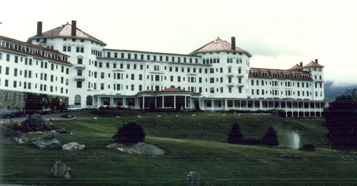
(1944년 브레턴우즈 회의가 열렸던 마운트 워싱턴 호텔) 그런데, 의문점이 하나 있습니다. 미국이 금본위제를 펼치려면, 막대한 양의 금을 보유하고 있어야 합니다. 미국 정부는 그 많은 금을 어떻게 모았고, 또 어디에 보유하고 있었던 것일까요 ? 여기서 포트 낙스(Fort Knox)의 전설이 시작됩니다. 이야기가 다시 1930년대로 되돌아갑니다. 대공황이 한창이던 이 시절, 프랭클린 루스벨트는 의회를 설득하여 1933년 일련의 법안을 내놓습니다. 이 법안 중 하나가 '금 유통 금지령'입니다. 즉, 당시까지만 해도 민간에서 유통되던 금화며 금괴들을 정부가 모조리 압류한 것입니다. 물론 대신 지폐쪼가리를 나누어 주었고, 장신구로서 판매, 보유되던 목걸이며 시계, 반지 등은 건드리지 않았지요. 이렇게 모은 금화며 금괴의 양은 엄청났는데, 이를 안전하게 보관할 장소가 필요해졌고, 그 결과 탄생한 것이 바로 포트 낙스입니다.
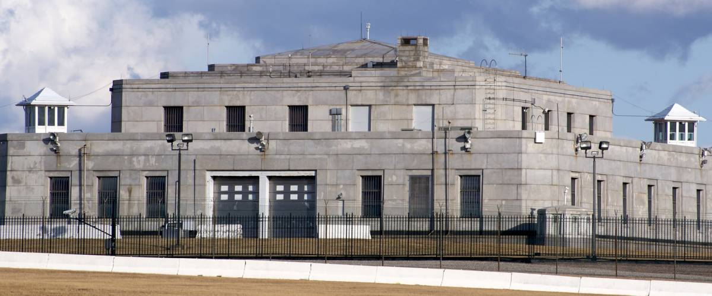
(007 영화 골드핑거에서 결정적으로 유명해진 미국 국가 금괴 저장고인 Fort Knox 입니다.) 전세계에서 가장 안전한 금고로 알려진 이 포트 낙스에 가장 많은 양의 금이 넘쳐났던 때는 제2차 세계대전 중이었습니다. 무려 2만톤이 넘었습니다. 이 2만톤이라는 양이 어떤 의미인지 아마 실감이 나지 않으실 것 같네요. 대략 말씀드리면, 2006년까지 인류가 채굴해낸 모든 금을 다 합치면 (물론 추정치이지만) 약 15만 8천톤에 불과합니다. 그나마, 그 중 약 5만톤 정도는 제2차 세계대전 이후에 채굴된 것입니다. 그러니까, 제2차 세계대전 중 미국 포트 낙스에는, 바다 속에 가라앉은 스페인 보물선의 금까지 포함해서 인류가 역사 이래 캐낸 모든 금의 20%가 보관되어 있었던 것이지요. 포트 낙스에 보관 중인 것과 미국 민간인들이나 시중 은행 등에서 보관했던 금까지 합하면, 전쟁 직후 전 세계 금 보유량의 80%가 미국 내에 있었다고 합니다.
(이 그래프로 대략 계산하면 1945년 이후 생산된 금의 총량은 대략 5만톤) 사실 세계에서 가장 큰 금 보유 금고는 포트 낙스가 아닙니다. 바로 뉴욕에 있는 연방 준비 은행 (Federal Reserve Bank of New York) 지하 금고입니다. 1927년에 이미 이곳에는 전세계 금 보유량의 10%가 보관되어 있었고, 지금은 오히려 포트 낙스보다도 더 많은 5천톤의 금괴가 보관되어 있습니다. 그러나 미국의 힘을 보여주는 것은 이 뉴욕 지하 금고가 아니라, 포트 낙스입니다. 이 뉴욕 지하 금고의 금은 미국의 것이 아니라, 세계 각국 정부나 중앙 은행, 각종 국제 금융 기구들이 소유한 것입니다. FRB에서는 '세계에 대해 봉사'하기 위해 무료로 보관만 해줄 뿐이라고 하네요. 그에 비해, 포트 낙스에 있는 금은 거의 100% 미국 정부의 소유입니다.
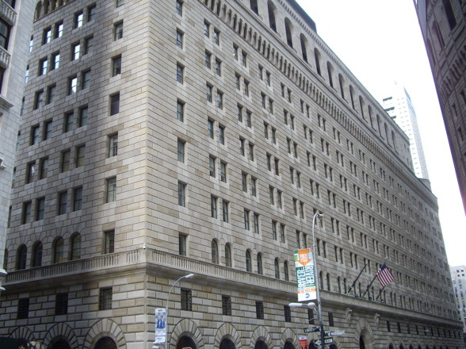
(뉴욕의 FRB 건물... 포트 낙스에 비하면 많이 허술해 보이지요 ? 그래서 다이하드3도 여기를 배경으로 합니다.) 지금은 세계 경제 속에서 많이 쭈그리가 된 미국의 모습을 반영하듯, 포트 낙스의 금 보유량도 많이 줄었습니다. 현재는 약 4천5백톤 만을 보유하고 있다고 합니다. 그래서인지 영화 다이하드3에서도, 악당들이 터는 곳은 포트 낙스가 아니라 뉴욕의 FRB 빌딩 지하 금고입니다. 저는 그런 대사 들은 기억이 없는데, 영화 중 악당으로 나오는 제레미 아이언스가 '포트 낙스 ? 그건 애들용이지 !'라고 말하는 장면이 나온다고 합니다.
(제레미 아이언스가 포트 낙스 대신 뉴욕 FRB 빌딩을 턴 이유가 다 있습니다. 뉴욕 FRB 빌딩은 브루스 윌리스만 처치하면 털 수 있지만 포트 낙스를 털려면 미육군 정규부대를 상대해야 합니다.) 하지만 제레미 아이언스가 포트 낙스를 털지 않은 진짜 이유는 경비 때문입니다. 저도 어렸을 때 본 미국 영화나 드라마 등에서 '포트 낙스보다도 튼튼하다'라는 표현을 자주 들었습니다. 포트 낙스는 실제로 켄터키 주에 있는 미 육군 기지이고, 흔히 포트 낙스라고 불리는 미국 금괴 보관소는 그 경내에 있거든요. 다만, 실제로 미 육군이 그 금고의 보초를 서고 있는 것은 아니고, 미국 조폐창 경찰이 그 경비를 맡고 있다고 합니다. 하지만, 악당들이 포트 낙스를 털러면 바로 옆의 미 육군 기지 전체와 상대해야 하는 것은 확실합니다.
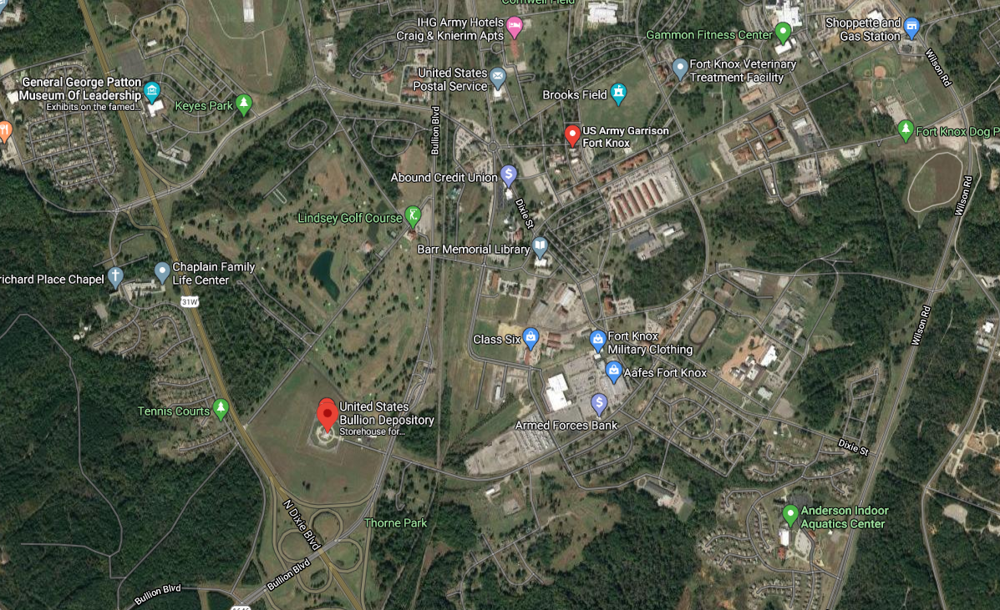
(사실 포트 낙스의 금괴 보관소는 탱크와 대공 미사일에 둘러싸여 있는 것은 아니고, 기지 정중앙에 있는 것도 아닙니다. 지도 좌하단에 있는 US Bullion Depository가 바로 그 건물로서, 영내 골프장 바로 옆에 있습니다.)
(군 기지에 웬 골프장이냐고요 ? 실제로 포트 낙스에 있는 린지 골프장은 미육군이 운영하는 골프장입니다. 우리나라 미군기지에도 기지 내부에 골프장이 있는 곳이 많습니다.) 이야기를 다시 처음으로 돌리지요. 세계 3위의 금 보유 단체(1위는 미국 정부, 2위는 독일 정부)인 IMF가 보유한 금의 1/8을 판다고 하니까 매우 많은 양 같습니다.
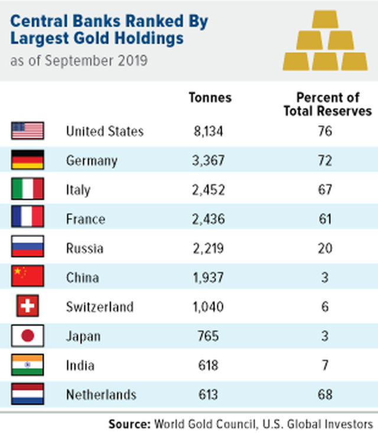
("중국 니 정말 마이 컸다..." "내가 덩치는 원래 제일 컸다 아이가 ?") 이 금은 주로 민간인들이 아닌, 각국 정부나 각국 중앙은행 등에 매각될 모양입니다. 예상으로는 주로 중국이나 러시아, 인도 정부가 사들일 것이라더군요. 이들 국가들은 금융 위기 돌파를 위해 미국이 찍어낸 많은 달러화로 인해 달러화 약세가 예상되자, 달러 말고 좀더 확실한 자산으로 바꾸기를 원한다고 하네요. 최근에 미국 정부가 발행한 달러 표시 국채를, 평소에는 꼬박꼬박 사들이던 중국이 이번에는 전혀 사지 않았다는 기사도 읽은 바 있습니다. IMF가 금을 파는 것은 '가난한 나라들에게 꿔 줄 달러를 확보'하기 위함이라고 하고, 아마 사실이겠지만, 역사적으로 보면 나름대로 중대한 의미를 가집니다. 금은 역사적으로 인류의 공통된 가치 저장 수단이자 국제 결제 수단입니다. 고대 국가들도 내부적으로는 동전을 만들어 유통하더라도 국제 상업 거래의 결제는 주로 금(또는 은)으로 치루었습니다. 그런데 금은 전세계적으로 매장지가 그리 고른 편은 아닙니다. 가령 유럽에서는 역사적으로 금이 거의 나지 않았습니다. 대신 은이 풍부했지요. 그래서 고대 그리스나 로마에서도 금화보다는 은화 위주로 경제가 돌아갔습니다. 금은 주로 아프리카나 중동 지방에서 났습니다. '마이다스의 손'으로 유명해진 미다스(Midas) 왕도 오늘날 터키 지방인 프리지아의 왕이었고, 고대 지중해 세계 최대의 부자로 알려진 크로이소스(Kroisos) 왕 역시 오늘날 터키 지방인 리디아의 왕이었습니다. 또 중세 때, 북아프리카 서쪽 말리 제국의 왕이 메디나로 성지 순례를 떠나는 길에 이집트 카이로를 들렀는데, 그와 그 수행원이 카이로에 뿌린 금화가 워낙 많아서 카이로의 금값이 폭락한 상태가 20년 동안이나 지속되었다고 합니다.
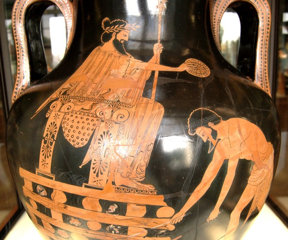
(당대 최고의 부자였던 크로이소스 왕... 말년은 그리 행복하지 못했다고...) 한마디로 말하면, 유럽에는 금이 없었다는 이야기입니다.
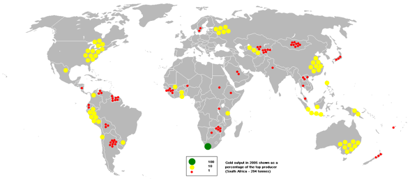
(국가별 금 생산량. 유럽과 우리나라의 공통점은 금이 거의 안난다는 점이지요.) 그러다가 유럽이 16세기 이후 군함과 대포를 내세워 북아프리카로 진출하고, 특히 스페인이 중남미를 정복하고 거기서 대량의 금광과 은광을 발견한 이래, 금의 흐름이 바뀌기 시작합니다. 금이 포르투갈과 스페인으로 흘러들어오기 시작한 것이지요. 그러나 16~17세기의 유럽은 사실상 보잘 것 없는 깡패 집단에 불과했다는 사실을 보여주는 것도 역시 금이었습니다. 이렇게 북아프리카와 중남미에서 무력으로 갈취한 금과 은이 유럽 내에 머물지 못하고, 곧장 향료/비단/도자기 무역을 통해 인도와 중국으로 흘러들어가버린 것입니다. 제대로 된 상품을 갖추지 못했으니 그런 현상이 일어났던 것입니다.
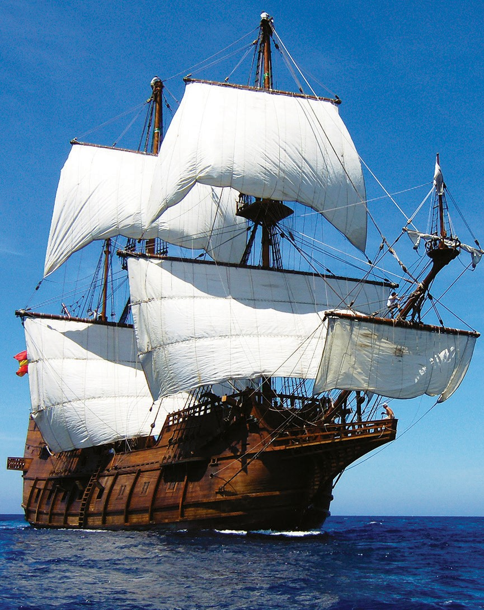
(가자 ! 거친 파도를 헤치고 인도와 중국에 금은보화를 쓰러 가자 !) 17세기에 어느 스페인 관료가 이런 말로 한탄을 했다고 합니다. "스페인은 유럽인들의 서인도제도이다 !" 즉, 스페인인들이 순박한 서인도 제도 사람들에게 보잘 것 없는 구슬이나 칼 따위를 주고 금붙이로 바꾸어 온 것처럼, 스페인에 금이 넘쳐나자, 프랑스산 포도주나 견직물, 독일제 공업품 따위의 시시한 물건들에 대해 스페인 사람들이 아무렇지도 않게 금화를 지불하는 모습을 보고 한탄한 것입니다. 그러면서 '우리의 진정한 금광은 목장과 농장, 공장이 되어야 한다'라고 주장을 했습니다. 산업적 경쟁력이 갖추어지지 않은 상태에서는 많은 금을 보유했다는 것이 곧 경제적 부로 이어지지는 않는다는 것을 뜻하는 것입니다. 19세기 초반만 하더라도, 중남미의 은은 스페인과 영국을 거쳐 꾸준히 중국으로 흘러들어가고 있었습니다. 차와 비단, 도자기 무역 때문이었지요. 유럽으로부터 유입된 은 때문에 당시 청나라 건륭제의 치세는 대단한 호황을 누리게 되었습니다.
(요즘 짐의 덕이 사해에 달해 사방에서 서양 오랑캐들이 은으로 조공을 바치러 몰려온다 들었다... 빈손으로 보낼 수는 없으니 비단 몇필과 차 몇단지를 챙겨서 보내도록 하거라) 그러다가 유럽이 산업혁명을 거치고 확실한 군사적, 기술적 우위를 점하면서, 침략 전쟁과 식민지 수탈을 통해 유럽에 금과 은이 쌓이기 시작합니다. 그 이후로 유럽인들의 세계 지배가 계속되다가, 제1,2차 세계대전을 거치면서, 다시 금이 대서양을 건너 미국으로 이동했지요. 가령 제2차 세계대전 중 미국이 영국에게 무기며 물자를 공급해준 것이 결코 공짜가 아니었는데, 그 댓가 중 일부는 당시 남아프리카 케이프타운에 보관되었던 영국 정부 소유의 금괴였다고 합니다. 이 금괴는 미국이 순양함을 보내 미국으로 실어와 포트 낙스에 보관했습니다.
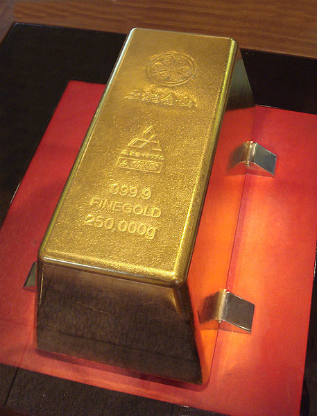
(금은 영원합니다 다만 그 주인이 바뀔 뿐) 자, 이제 포트 낙스의 금 보유량은 어느덧 많이 줄어들었습니다. 인류의 역사와 함께, 금은 이리저리 주인을 바꾸고 있습니다.
* 이건 목요일에 올리는 재탕글이고, 원래 리먼 사태 이후 얼마 지나지 않은 2009년에 썼던 글입니다. 돌이켜보면 전세계는 정말 거의 10년마다 한번씩 경제 위기를 겪네요.